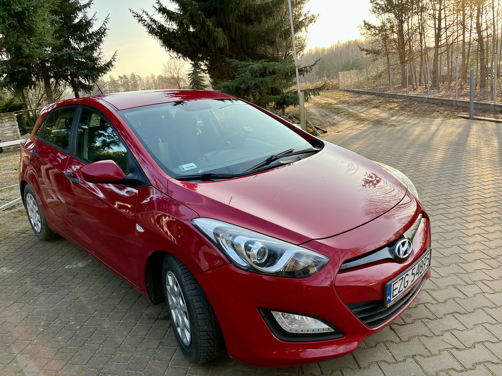
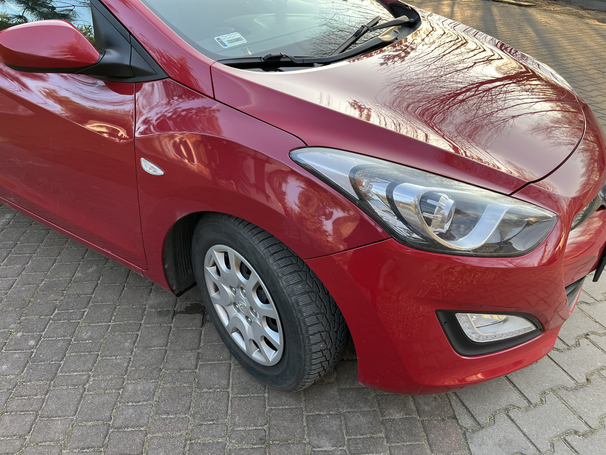
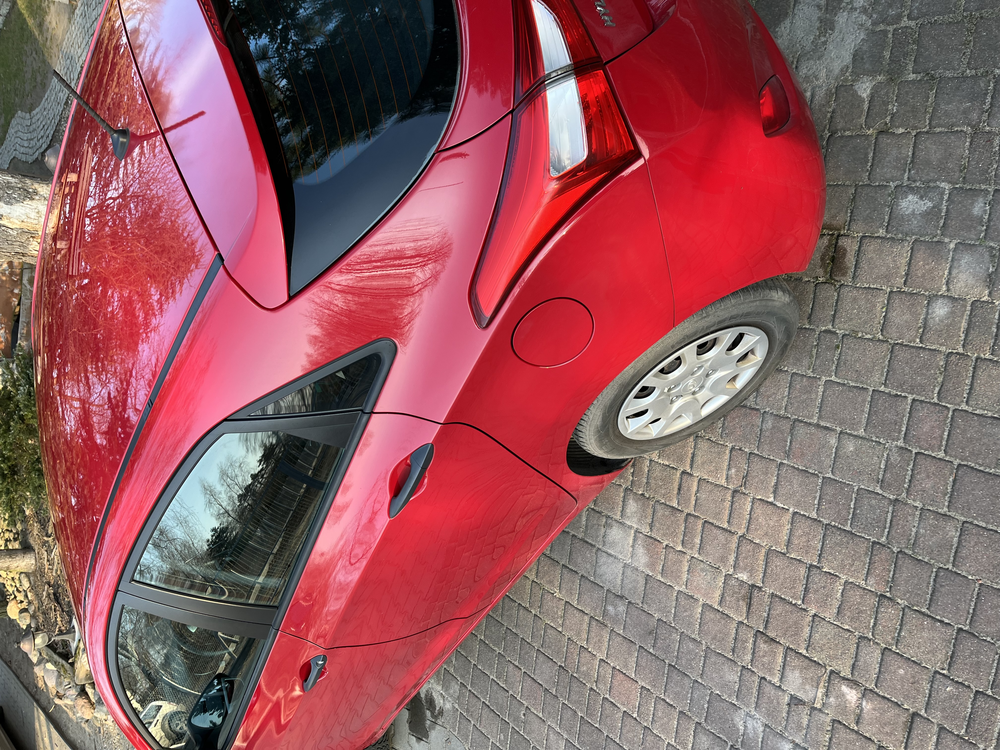
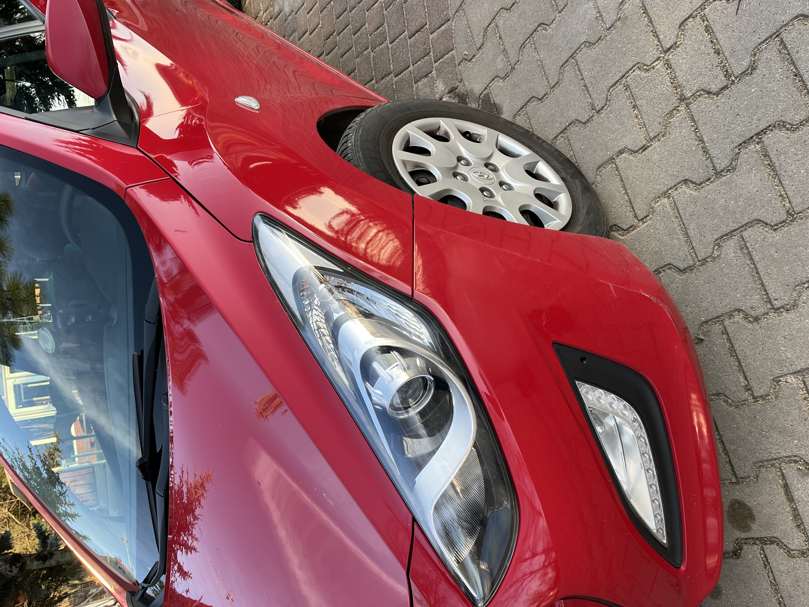
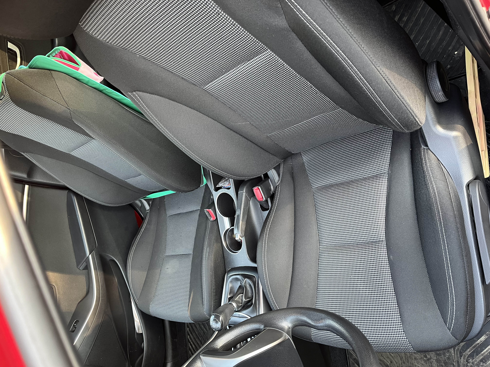
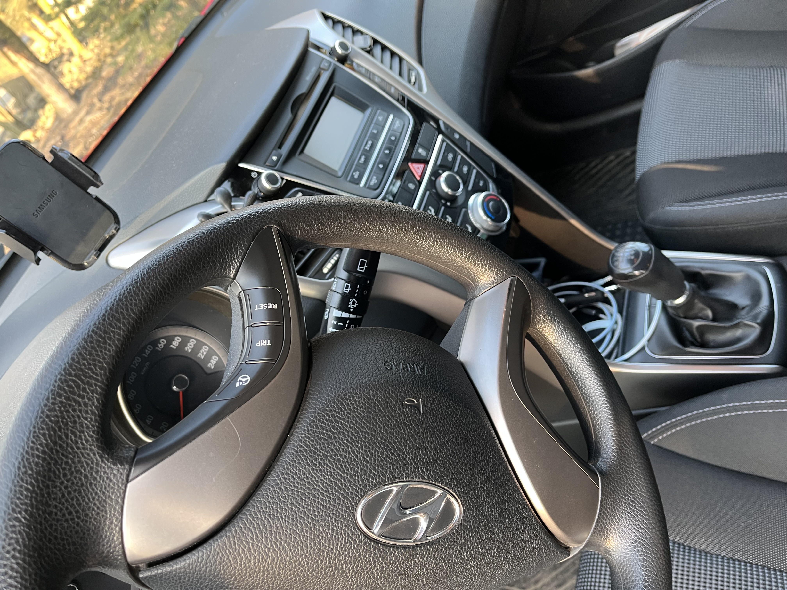
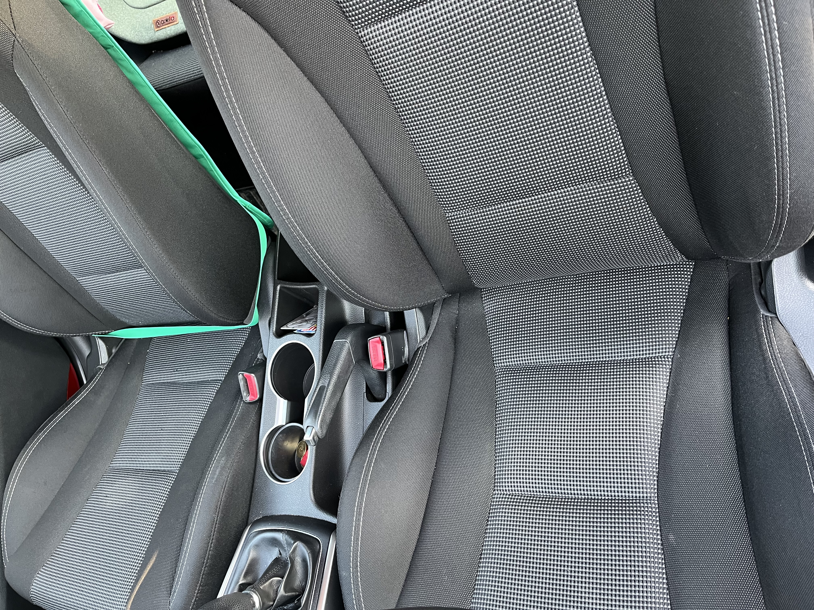
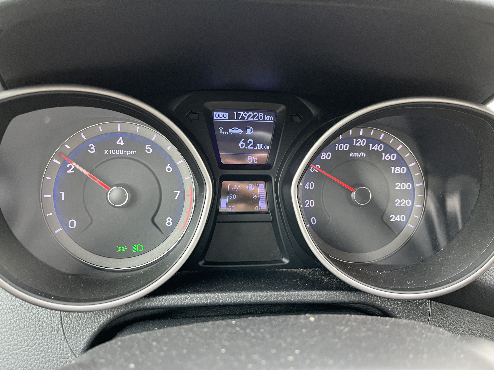

Cena: 26 000 PLN

Sprzedam niezawodne auto miejskie marki Hyuindai i30, II generacji, rok produkcji 2012. Auto jest w stanie idealnym, nie wymaga wkładu finansowego. Świeżo wymieniony olej + filtry w tym kabinowy, klimatyzacja działa rewelacyjnie- bardzo szybko chłodzi auto. Silnik pracuje równo, bardzo cicho, nic nie stuka. Bardzo dobrze się prowadzi. Auto użytkowane przez prywatnego użytkownika, nie podszykowane na sprzedaż, posada normalne ślady użytkowania. Na jednym ze zdjęć widać delikatnie na prawym przednim zderzaku otarcie. Zderzak jest plastikowy, brak pęknięć. Auto jest bardzo ekonomiczne. W mieście pali średnio 6,5 - 7,0 litra/100 km, poza miastem 6 - 6,5 km- przy pracującej klimatyzacji i dynamicznej jeździe. W sprzedaży razem z autem dwa komplety opon. Przegląd ważny do 05/2026, OC ważne do 05/2026. Wyposażenie: * Klimatyzacja (w pełni sprawna) * elektryczne szyby i lusterka * ESP i ABS * centralny zamek z pilotem * radio CD/MP3, AUX, USB * Isofix * poduszki powietrzne (możliwość wyłączenia poduszki z przodu - dla montażu fotelika niemowlęcego)







Katarzyna: +48 602 495 687
Krzysztof: +48 796 809 731